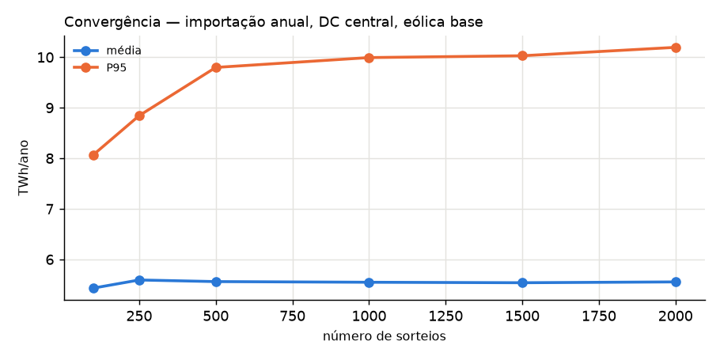
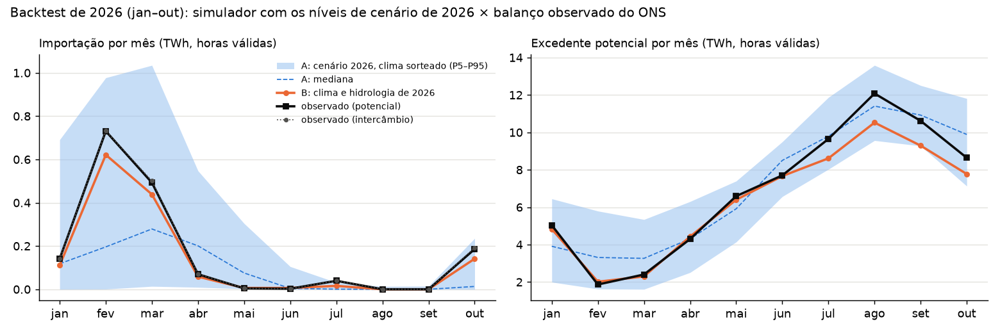
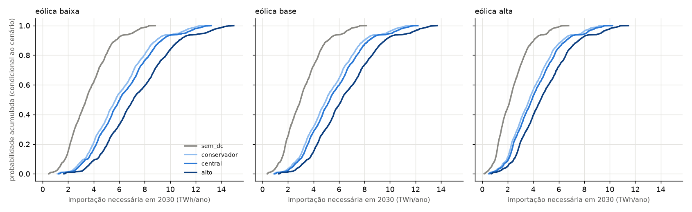
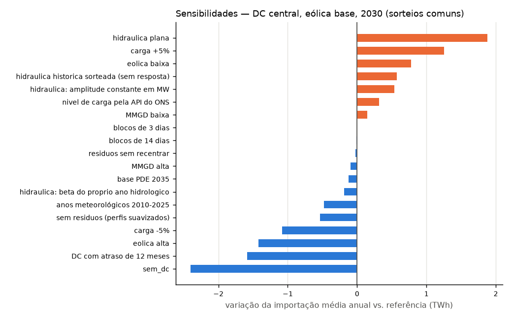

Relatório final gerado por python -m src.report.final em 2026-11-25 15:27 UTC. Os números vêm de tabelas versionadas em reports/ e config/; os poucos valores de análises exploratórias trazem a decisão de docs/decisoes.md em que estão registrados. Os resultados de 2030 são condicionais a cenários e hipóteses declarados, não previsões. Margem negativa indica necessidade de importação do restante do SIN, não déficit de suprimento.
Resumo
- Data centers. A carga de data centers de Rede Básica projetada oficialmente para o NE em 2030 (2ª Revisão Quadrimestral do PLAN 2026–2030) é de 2.098 MWmed, dos quais 1.886 MWmed já têm contrato assinado.
- Importação. Com a eólica do cenário base (34,3 GW), a necessidade média de importação do NE em 2030 vai de 3,2 TWh/ano sem novos data centers para 5,6 TWh/ano no cenário central.
- Efeito pareado. No mesmo clima, o cenário central acrescenta +2,4 TWh/ano, com P5–P95 de 1,3 a 3,7, e +454 horas com importação. O aumento ocorre em 100% dos sorteios.
- Compensação em energia não basta. 4,6 GW eólicos adicionais compensariam a energia anual do cenário central. Para devolver a importação anual média ao nível sem data centers seriam necessários 10,4 GW, cerca de 2,3 vezes mais. O vento falta justamente nas horas de importação, e a razão cresce com a frota.
- Absorção de excedente. 87% da energia dos data centers cairia em horas de excedente regional. Isso é potencial de absorção, não corte evitado: o estudo não representa a rede interna nem as restrições locais.
- Variabilidade climática. O clima pesa tanto quanto a escolha de cenário. A amplitude interquartil da importação anual entre sorteios (cenário central, eólica base) é de 3,2 TWh, contra 3,2 TWh entre as medianas dos cenários de data centers. O ano meteorológico explica 80% da variância e o ano hidrológico, 19%.
- Hipóteses que mais pesam, além do próprio cenário de data centers:
- nível da carga ±5%: -1,1 / +1,3 TWh;
- convenção do despacho hidráulico: hidráulica plana +1,9 TWh; despacho histórico sorteado, sem resposta, +0,6 TWh;
- atraso de 12 meses dos data centers: -1,6 TWh;
- capacidade eólica: baixa +0,8, alta -1,4 TWh.
- Quanto confiar no nível. Rodado com os níveis observados de 2022–2025, o simulador erra a importação anual entre -11% e +1% (seção 4.4). Fora da amostra, com as funções de transferência re-treinadas sem o próprio ano, o erro vai de -27% a -2% em 2022–2026. O nível absoluto de 2030 carrega um erro dessa ordem e tende a estar subestimado; as diferenças pareadas entre cenários variam menos.
1. Pergunta e recorte
Pergunta. Sob diferentes cenários de entrada de data centers e de expansão eólica, como mudam a necessidade de importação e os excedentes horários do subsistema Nordeste em 2030, e quanto de expansão eólica compensaria o consumo adicional?
Recorte.
- Subsistema NE do ONS: AL, BA, CE, PB, PE, PI, RN e SE. O MA pertence ao subsistema Norte.
- Histórico de 2022–2025. Os dados de janeiro a outubro de 2026 entram no treino das funções de transferência, nos resíduos e no coeficiente da regra hidráulica, mas não na hidrologia sorteada nem na validação retrospectiva. Ano-alvo: 2030.
- Fora do escopo: fluxo de potência, adequação do SIN e viabilidade econômica.
Variável central.
- M(t) = G_NE(t) − [L_base(t) + L_DC(t)].
- Importação = max(0, −M); excedente = max(0, M).
- G_NE inclui hidráulica, térmica, eólica, solar centralizada e MMGD. A MMGD também é descontada da carga bruta, de modo que a carga líquida não a conta duas vezes.
2. Dados
Detalhes em reports/quality/relatorio_qualidade.md; origem, URL e SHA-256 de cada arquivo em docs/manifest/manifest.csv.
- ONS:
- balanço horário por subsistema, intercâmbio, carga verificada semi-horária (API; separa a MMGD);
- geração e fator de capacidade por usina, constrained-off eólico e solar com motivo;
- capacidade instalada.
- ANEEL: SIGA e MMGD.
- EPE: PDE 2035, relatório e planilhas.
- ONS/EPE/CCEE: notas de previsão de carga do PLAN 2026–2030 e workshop da 2ª Revisão Quadrimestral.
- Clima: ERA5 via Open-Meteo em 34 pontos (8 capitais, 16 clusters eólicos, 10 polos solares), 1995–2026.
- Outros: IBGE (população) e calendário de feriados e eventos do NE.
- Data centers: inventário documental em
config/data_centers_ne.csv(17 itens com fonte, definição da potência e maturidade).
Achados de qualidade que condicionam o método.
- Mudança de definição da carga. Em 29/04/2023 o balanço do ONS passou a incluir a MMGD estimada na carga e na geração solar; a série de carga tem um degrau de ~0,5 GW (decisão 12). A forma horária da carga vem da API de carga do ONS, de definição homogênea, e a MMGD é tratada à parte. O nível de 2030 vem do PLAN (seção 3.1).
- Corte eólico em alta. O corte eólico apurado (GNRa) passou de 0,6% (2022) para 20,2% (2025) do potencial.
- A geração de referência do constrained-off fica abaixo da geração em parte relevante das horas, então não é o potencial.
- O potencial adotado é geração verificada + GNRa.
- Com o corte, a correlação vento³ × CF observado cai de 0,87 (2022) para 0,58 (2025), enquanto vento³ × CF potencial fica em 0,85–0,88.
- Anos com dados abaixo da média de vento. Pelo CF eólico que a frota atual teria em cada ano do ERA5 (figura
s2), 2022 é o 4º ano menos ventoso de 31, 2024 o 7º e 2023 o 11º; 2025 é o 23º. A média de 2022–2025 (0,449) fica abaixo da média dos 31 anos (0,460), e o período não contém nem o ano mais fraco (2009) nem o mais forte (2012). - Balanço de 2026 incompleto. De jan a mai/2026, 878 horas não fecham (decisão 16). 2026 fica fora da calibração do balanço.


3. Metodologia
3.1 Trajetórias de 2030 (config/cenarios.yaml, config/cenarios_dc.yaml)
- Carga sem novos data centers. Carga global do NE em 2030 na 2ª RQ do PLAN (18.278 MWmed) menos a carga de data centers de Rede Básica da mesma projeção (2.098), ou seja, 16.180 MWmed. É um contrafactual sem nenhum data center de Rede Básica, inclusive os que entram a partir de 2026. O PDE 2035 (16.340 MWmed, com data centers embutidos) entra como sensibilidade.
- MMGD em 2030. 2.386 MWmed (2ª RQ do PLAN).
- Data centers (MWmed em 2030, carga flat):
- conservador = contratos assinados, 1.886;
- central = 2ª RQ do PLAN (100% dos contratos e 50% dos pareceres favoráveis), 2.098;
- alto = contratos + 100% dos pareceres + projetos anunciados com MW, em rampa, 2.753.
- A projeção oficial já está em MWmed de carga na rede, então não se aplica PUE.
- Eólica. baixa 32,3 GW (só operação, SIGA); base 34,3 GW (+ construção); alta 39,4 GW (+ expansão indicativa do PDE até 2030, alocada ao NE).
- Solar. 13,5 GW.
- Intercâmbio. Exportação limitada a 21 GW (PDE 2035). Não há limite de importação documentado; usa-se sensibilidade em 6, 8 e 10 GW.
3.2 Modelos
Todos os modelos são HistGradientBoosting (scikit-learn), com hiperparâmetros fixos e semente fixa.
- Curto prazo (validação acadêmica). Carga líquida, CF eólico potencial e CF solar observado, em horizontes de 1 h e 24 h. A solar usa o CF observado, que inclui o corte, porque o potencial só existe desde 2024-04.
- Backtesting com origem móvel em 12 dobras mensais de 2025.
- Lags só até a origem da previsão.
- Clima ERA5 tratado como previsão perfeita, então o desempenho é um limite superior.
- Funções de transferência clima → sistema (sem lags). Geram perfis horários de 2030 para cada ano meteorológico, no calendário de 2030, com clima ponderado pela frota atual fixa. São quatro:
- forma da carga bruta: hora, dia da semana, mês, feriado nacional, ponto facultativo, temperatura (da hora e média de 24 h) e irradiância nas capitais;
- forma da MMGD: hora, mês e irradiância nas capitais e nos polos solares;
- CF eólico potencial (frota 2024-07..2026-10): hora, mês e vento a 100 m em cada um dos 16 polos;
- CF solar potencial: hora, mês, irradiância nos polos e temperatura.
- Escolha das features por ablação fora da amostra (
src/models/ablacao.py, decisão 55): cada variante é re-treinada e avaliada em anos ou blocos longos fora do treino. Em relação às features anteriores, o RMSE cai 8,0% na eólica, 5,3% na solar, 3,0% na carga e 2,8% na MMGD, todos com IC95 que não contém zero. O dia do ano saiu dos quatro modelos: piorava a eólica e a solar. Como as features foram escolhidas nas mesmas dobras, os ganhos são ligeiramente otimistas.
- Classificador de cortes por motivo. Avaliado apenas quanto à viabilidade.
3.3 Monte Carlo (src/sim/montecarlo.py)
- Sorteios. 2.000 sorteios, semente 20261112. Cada sorteio combina:
- um ano meteorológico de 1995–2025 (31 anos);
- um ano hidrotérmico de 2022–2025;
- uma sequência de blocos de 7 dias de resíduos fora da amostra das quatro séries, reamostrados conjuntamente, iniciando à 00h e escolhidos a ±14 dias do dia do ano.
- Os resíduos cobrem 2024-07-01 a 2026-10-31: dois anos de janeiro a junho, quando o NE mais importa (até 2026-11-25 havia só um; decisão 56).
- Resíduos recentrados. Os resíduos fora da amostra não têm média zero, e o viés muda com a época do ano. De cada série subtrai-se a média esperada no mês sob o próprio sorteio (na solar e na MMGD, no mês e na hora, para não criar geração à noite). O centro do CF eólico vai de -0,0034 a +0,0043 e o da carga, de -0,0069 a +0,0094. As formas de carga e MMGD voltam a ter média 1 em cada sorteio. Assim os resíduos repõem variabilidade horária sem deslocar o nível. Sem o recentramento, a importação média do caso central seria -0,03 TWh diferente (tabela 5.5).
- Números aleatórios comuns. Os mesmos sorteios valem para todos os cenários, então as diferenças entre cenários são pareadas.
- Hidráulica (caso central, decidido pelo usuário). Regra histórica emulada:
- a energia diária é a do ano hidrológico sorteado;
- a forma intradiária responde à carga líquida simulada com um coeficiente estimado sobre a carga líquida potencial (geração + corte), a mesma a que a regra é aplicada (decisão 52);
- o coeficiente é o de 2026, 0,21 (decisão 57). Ele cai quando a carga líquida oscila mais dentro do dia: de 0,42 em 2022 (desvio de 1.855 MW) a 0,16 em 2025 (4.683 MW); em 2026 sobe um pouco, porque a hidrologia também pesa. Em 2030 o desvio simulado é 6.888 MW, e 2026 é o regime observado mais próximo (5.978 MW). O coeficiente do próprio ano hidrológico e a amplitude constante em MW entram como sensibilidades;
- a geração fica dentro dos mínimos e máximos mensais históricos, e a energia diária é conservada.
- O despacho histórico sorteado sem resposta e a hidráulica plana entram como sensibilidades.
- A térmica segue o histórico do ano sorteado.
- Separação das incertezas. A incerteza amostrada é climática e operacional. As escolhas de cenário ficam como eixos separados.
4. Validação
4.1 Curto prazo (2025, fora da amostra)
| Alvo | h (horas) | MAE do HGB | Melhor baseline (MAE) | Ganho | Meses em que o HGB vence |
|---|---|---|---|---|---|
| A_carga_liquida | 1 | 139 | sazonal_semanal (468) | 70% | 12/12 |
| A_carga_liquida | 24 | 299 | sazonal_semanal (468) | 36% | 11/12 |
| B_cf_eolico_pot | 1 | 0,015 | persistencia_1h (0,025) | 41% | 12/12 |
| B_cf_eolico_pot | 24 | 0,044 | persistencia_24h (0,082) | 47% | 12/12 |
| C_cf_solar | 1 | 0,018 | sazonal_diario (0,048) | 62% | 12/12 |
| C_cf_solar | 24 | 0,042 | persistencia_24h (0,048) | 13% | 10/12 |
O modelo de árvores supera de forma consistente o baseline sazonal e a persistência. O menor ganho é o da solar a 24 h.
4.2 Funções de transferência
- Forma da carga bruta (validação deixando um ano de fora; erro da forma com média 1 no ano, como o simulador a usa): MAE de 2,5–3,0%, contra 2,8–3,9% do perfil mês × dia × hora.
- CF eólico potencial:
- frota recente (treino até 2025-12, teste em 2026): MAE 0,041 e viés -0,014;
- correlação horária com o observado em 2025: 0,97 fora da amostra (validação cruzada mensal) e 0,99 com o modelo final, que viu 2025 no treino;
- fora da amostra, com os resíduos, o desvio-padrão horário de 2025 fica em 0,181, contra 0,183 observado.
- Diferença de nível em 2022–2023. O CF médio sintético desses anos é maior que o observado (0,429 contra 0,408 em 2022). Isso reflete a frota atual, com curva de potência 5–10% maior nas faixas de vento alto (decisão 20).
- Extrapolação. No máximo 0,05% das horas de 1995–2021 ficam fora da faixa de treino de alguma variável.
- Convergência do Monte Carlo (cenário central, eólica base): de 1.500 para 2.000 sorteios, a média variou 0,30% e o P95, 1,66% (figura
mc2). - Blocos de resíduos. Trocar os blocos de 7 dias por blocos de 3 ou 14 dias muda a média em até 0,01 TWh.


4.3 Classificador de cortes (Modelo D)
- Desempenho. Para o corte por razão energética, ROC-AUC de 0,91–0,93 e PR-AUC de 0,77–0,85, contra 0,25–0,32 ao acaso.
- Instabilidade. A calibração muda com o regime: a taxa de horas com corte subiu de 7% para 69% entre 2022 e 2025.
- REL não é previsível com as features ex-ante.
- Uso. O classificador fica descritivo. Não gera probabilidade de corte em 2030, e a importância das variáveis não tem interpretação causal.
4.4 Validação retrospectiva do simulador (src/sim/backcast.py)
O simulador do Monte Carlo foi rodado com o clima, o ano hidrotérmico e os níveis observados de cada ano de 2022–2025: carga coerente com o balanço do ONS, MMGD e energia eólica e solar potenciais. Só os resíduos são sorteados (300 sorteios), sem os do próprio ano. O teste mede as formas horárias e a convenção hidráulica, não os cenários de 2030. A importação observada é a potencial (intercâmbio mais cortes), o conceito do simulador; entre parênteses, a realizada (decisão 54). O coeficiente da regra é o do próprio ano. As funções de transferência viram parte desses anos no treino; o erro fora da amostra está no diagnóstico, abaixo.
| Ano | Importação observada, potencial (realizada) (TWh) | Simulada, regra emulada (erro) | Simulada, despacho hidráulico observado (erro) | Pico observado (GW) | Pico simulado, regra (GW) | Pico simulado, despacho observado (GW) | Corte eólico em horas de importação (importação que evitaria) (TWh) |
|---|---|---|---|---|---|---|---|
| 2022 | 1,47 (1,47) | 1,49 (+1%) | 2,00 (+36%) | 7,1 | 5,9 | 6,9 | 0,00 (0,00) |
| 2023 | 2,38 (2,39) | 2,14 (-10%) | 2,43 (+2%) | 7,2 | 7,2 | 8,3 | 0,07 (0,01) |
| 2024 | 3,30 (3,32) | 2,94 (-11%) | 3,23 (-2%) | 7,6 | 8,0 | 9,6 | 0,02 (0,01) |
| 2025 | 1,52 (1,58) | 1,40 (-8%) | 1,43 (-6%) | 7,9 | 8,2 | 9,0 | 0,37 (0,07) |
- Erro da importação anual. Com a regra emulada, de -11% a +1%, erro absoluto médio de 7%. Com o despacho hidráulico observado no próprio ano, de -6% a +36%, erro absoluto médio de 11%. Nenhuma convenção é melhor em todos os anos.
- O erro muda ao longo dos anos. Com a regra, vai de +1% em 2022 a -8% em 2025; com o despacho observado, de +36% a -6%.
- Cortes em horas de importação não explicam o erro. Em 2025 foram 0,37 TWh de corte eólico, mas gerá-los reduziria a importação em só 0,07 TWh, porque o corte quase sempre excede a importação da hora.
- Picos. Com a regra, o pico simulado difere do observado em -1,2 a +0,4 GW; com o despacho observado, em -0,2 a +2,0 GW.
- Leitura. O nível absoluto da importação de 2030 carrega um erro estrutural dessa ordem, comparável ao efeito de trocar a convenção hidráulica (tabela 5.5). As diferenças pareadas usam o mesmo sorteio nos dois lados da comparação e variam menos entre hipóteses (seção 5.2).
Figura: reports/figures/mc4_backcast.png.
Backtest de 2026 e diagnóstico (src/sim/backtest_2026.py, src/sim/diagnostico_importacao.py; detalhes na seção 7.5 do relatório técnico). O cenário de 2026 foi comparado ao balanço observado de janeiro a outubro, nas horas em que o balanço do ONS fecha.
- Clima e hidrologia sorteados. A importação observada (1,67 TWh) cai no percentil 72 da distribuição do Monte Carlo de 2026 (P5–P95 0,34–2,88 TWh). Não é previsão ex-ante: modelos, resíduos e coeficiente da regra usam dados até out/2026.
- Com o clima e a hidrologia de 2026 (modelos treinados só até 2025, resíduos só de 2024–2025), o simulador dá 1,40 TWh (-16%).
- Fora da amostra, com os níveis observados (funções re-treinadas sem o próprio ano, resíduos de outros anos), o erro da importação é de -2% em 2022, -8% em 2023, -2% em 2024, -15% em 2025, -27% em 2026.
- Coeficiente da regra hidráulica (decisões 52 e 57). Era estimado sobre a carga líquida já cortada e, depois, aplicado a 2030 com o valor de anos de oscilação muito menor. Com o beta de 2026 a importação central de 2030 é 5,55 TWh, contra 5,36 com o de cada ano hidrológico; o efeito dos data centers, 2,38 contra 2,32 TWh.
- Cauda de pouco vento (decisão 53, revista). A limitação registrada em 2026-11-17 não se confirma: com o observado corrigido (decisão 54) e o vento por polo (decisão 55), o P5 horário da eólica simulada fica entre -480 e +111 MW do observado em 2022–2026. A subestimação que resta não vem de uma parcela só.
Figura: reports/figures/b26_backtest_2026.png.


5. Resultados para 2030
5.1 Distribuições condicionais — eólica base (2.000 sorteios)
| DC | L_DC (MWmed) | Importação TWh/ano: média [P5–P95] | Horas com importação: média [P5–P95] | P95 horário (MW) | Pico (MW) | Maior sequência (h) | Excedente (TWh) | Excedente > 21 GW (TWh) |
|---|---|---|---|---|---|---|---|---|
| sem_dc | 0 | 3,2 [1,1–6,4] | 918 [446–1.520] | 2.932 | 10.720 | 18 | 93,1 | 4,1 |
| conservador | 1.886 | 5,3 [2,2–9,7] | 1.321 [730–2.006] | 4.783 | 12.606 | 23 | 78,6 | 2,6 |
| central | 2.098 | 5,6 [2,4–10,2] | 1.372 [765–2.061] | 4.993 | 12.818 | 25 | 77,1 | 2,4 |
| alto | 2.753 | 6,5 [3,0–11,6] | 1.541 [888–2.250] | 5.648 | 13.473 | 29 | 72,3 | 2,0 |
Importação média (TWh/ano) por cenário de data centers × eólica:
| DC \ eólica | baixa (32,3 GW) | base (34,3 GW) | alta (39,4 GW) |
|---|---|---|---|
| sem_dc | 3,6 | 3,2 | 2,4 |
| conservador | 6,0 | 5,3 | 3,9 |
| central | 6,3 | 5,6 | 4,1 |
| alto | 7,4 | 6,5 | 4,9 |
O simulador determinístico, com os 4 anos observados, dá 2,9 → 5,3 TWh (sem DC → central, eólica base). Ele difere do Monte Carlo em três escolhas de método:
- despacho histórico pareado ao ano, em vez da regra emulada;
- 4 anos meteorológicos, em vez de 31;
- perfis observados, em vez de sintéticos com resíduos.
A tabela 5.5 quantifica o efeito de cada uma. Figura: reports/figures/mc1_distribuicao_importacao.png.

5.2 Efeito dos data centers (diferenças pareadas contra sem_dc, mesmo sorteio)
| DC | eólica | Δ importação TWh: média [P5–P95] | Δ horas: média [P5–P95] | sorteios com Δ > 0 |
|---|---|---|---|---|
| conservador | baixa | 2,4 [1,3–3,6] | 461 [339–582] | 100% |
| conservador | base | 2,1 [1,1–3,3] | 402 [282–520] | 100% |
| conservador | alta | 1,6 [0,7–2,7] | 297 [186–402] | 100% |
| central | baixa | 2,7 [1,5–4,1] | 520 [386–656] | 100% |
| central | base | 2,4 [1,3–3,7] | 454 [323–585] | 100% |
| central | alta | 1,8 [0,8–3,0] | 335 [212–453] | 100% |
| alto | baixa | 3,8 [2,1–5,6] | 713 [542–886] | 100% |
| alto | base | 3,3 [1,8–5,2] | 623 [454–789] | 100% |
| alto | alta | 2,5 [1,2–4,2] | 460 [298–615] | 100% |
O efeito incremental dos data centers é positivo em todas as hipóteses testadas e fica na mesma ordem de grandeza (tabela 5.5, 500 sorteios comuns, DC central):
- convenção hidráulica: +2,40 TWh/ano com a regra emulada, +2,51 com o despacho histórico sorteado e +2,90 com a hidráulica plana;
- demais sensibilidades (exceto o atraso dos data centers): de +1,80 a +2,90 TWh/ano.
O nível absoluto da importação, em contraste, depende bastante dessas hipóteses.
5.3 Compensação eólica (regra 11)
Capacidade eólica adicional que devolve cada métrica ao nível sem data centers, calculada sobre a média dos sorteios. Para a importação anual, a faixa P5–P95 vem do cálculo sorteio a sorteio.
| DC | eólica | ΔW energia anual (GW) | ΔW importação anual (GW) [P5–P95 por sorteio] | ΔW horas de importação (GW) | ΔW P95 horário (GW) | razão temporal/energia | energia de DC em horas de excedente |
|---|---|---|---|---|---|---|---|
| conservador | baixa | 4,1 | 8,8 [7,4–10,4] | 6,1 | 8,5 | 2,1× | 86% |
| conservador | base | 4,1 | 9,3 [7,8–11,0] | 6,5 | 8,6 | 2,3× | 87% |
| conservador | alta | 4,1 | 10,6 [8,8–12,7] | 7,5 | 9,2 | 2,6× | 91% |
| central | baixa | 4,6 | 9,8 [8,3–11,6] | 6,9 | 9,4 | 2,1× | 85% |
| central | base | 4,6 | 10,4 [8,7–12,4] | 7,3 | 9,6 | 2,3× | 87% |
| central | alta | 4,6 | 11,9 [9,8–14,2] | 8,4 | 10,3 | 2,6× | 90% |
| alto | baixa | 6,0 | 13,1 [11,0–15,6] | 9,1 | 12,5 | 2,2× | 84% |
| alto | base | 6,0 | 13,9 [11,6–16,6] | 9,6 | 12,7 | 2,3× | 86% |
| alto | alta | 6,0 | 15,9 [13,1–19,0] | 11,2 | 13,6 | 2,7× | 90% |
Leitura:
- A compensação temporal exige 2,1–2,7 vezes a capacidade equivalente em energia.
- Quanto maior a frota, mais difícil compensar no tempo: as horas de importação que restam são as de vento fraco.
- A compensação pelo P95 horário varia menos com a frota do que a compensação pela importação anual.
5.4 Limites de importação (sensibilidade; não é risco de déficit)
Horas por ano com importação acima de cada limite / fração dos anos simulados com ao menos uma hora acima dele:
| DC (eólica base) | > 6 GW | > 8 GW | > 10 GW |
|---|---|---|---|
| sem_dc | 162 h / 100% | 53 h / 97% | 9 h / 71% |
| conservador | 331 h / 100% | 154 h / 100% | 49 h / 97% |
| central | 353 h / 100% | 170 h / 100% | 57 h / 97% |
| alto | 428 h / 100% | 222 h / 100% | 86 h / 99% |
Como ler.
- Não há limite de importação documentado para o NE. O maior fluxo observado em 2022–2025 foi de 7,9 GW, e fluxo não é capacidade.
- Nos níveis históricos, o pico simulado com a regra emulada fica de -1,2 a +0,4 GW do observado (seção 4.4).
- Os picos de 2030 ficam acima desse patamar já sem data centers (10,7 GW em média). Isso vem do crescimento da carga com a térmica mantida no despacho histórico: 540–771 MWmed de média anual e máximo horário de 3,7 GW. O estudo não representa o redespacho térmico ou hidráulico que ocorreria nessas horas.
- A tabela mede quanto da necessidade simulada passaria de cada patamar se nada mais respondesse. Não é probabilidade de déficit de suprimento.
5.5 Sensibilidades (DC central, eólica base, 500 sorteios comuns)
| Caso | Importação média (TWh) | Δ vs. referência | P95 anual (TWh) | Horas com importação | Efeito pareado dos DC (TWh) [P5–P95] |
|---|---|---|---|---|---|
| referencia | 5,62 | 0,00 | 10,39 | 1.384 | 2,40 [1,36–3,82] |
| sem_dc | 3,22 | -2,40 | 6,58 | 927 | 0,00 [0,00–0,00] |
| carga -5% | 4,54 | -1,08 | 8,71 | 1.187 | 2,04 [1,11–3,37] |
| carga +5% | 6,88 | 1,26 | 12,24 | 1.602 | 2,81 [1,65–4,28] |
| MMGD baixa | 5,77 | 0,15 | 10,65 | 1.427 | 2,47 [1,40–3,93] |
| MMGD alta | 5,53 | -0,09 | 10,22 | 1.358 | 2,36 [1,33–3,75] |
| hidraulica plana | 7,51 | 1,88 | 12,50 | 1.630 | 2,90 [1,82–4,22] |
| hidraulica historica sorteada (sem resposta) | 6,20 | 0,57 | 10,97 | 1.430 | 2,51 [1,55–3,85] |
| DC com atraso de 12 meses | 4,04 | -1,58 | 7,93 | 1.089 | 0,82 [0,45–1,34] |
| base PDE 2035 | 5,50 | -0,13 | 10,18 | 1.361 | 2,36 [1,33–3,77] |
| eolica baixa | 6,40 | 0,78 | 11,44 | 1.575 | 2,73 [1,58–4,19] |
| eolica alta | 4,20 | -1,42 | 8,31 | 1.035 | 1,80 [0,95–3,10] |
| sem residuos (perfis suavizados) | 5,09 | -0,54 | 9,73 | 1.311 | 2,25 [1,22–3,67] |
| residuos sem recentrar | 5,60 | -0,03 | 10,36 | 1.380 | 2,40 [1,35–3,81] |
| nivel de carga pela API do ONS | 5,94 | 0,32 | 10,88 | 1.440 | 2,51 [1,43–3,94] |
| hidraulica: beta do proprio ano hidrologico | 5,44 | -0,19 | 10,15 | 1.355 | 2,34 [1,23–3,77] |
| hidraulica: amplitude constante em MW | 6,16 | 0,54 | 10,93 | 1.459 | 2,55 [1,52–3,92] |
| blocos de 3 dias | 5,62 | -0,00 | 10,49 | 1.386 | 2,40 [1,33–3,80] |
| blocos de 14 dias | 5,62 | -0,01 | 10,34 | 1.383 | 2,40 [1,33–3,80] |
| anos meteorológicos 2010-2025 | 5,14 | -0,48 | 8,37 | 1.298 | 2,24 [1,12–3,44] |
Figura: reports/figures/mc3_sensibilidades.png. A referência desta tabela usa 500 sorteios, por isso difere ligeiramente da tabela 5.1.

6. Limitações
- Sem rede. Excedente regional não é corte. Não há representação da rede interna do NE, das restrições locais nem das restrições externas além dos limites agregados. Cortes em horas de importação ficam de fora; em 2025, gerá-los evitaria 0,07 TWh.
- Erro do simulador. Com os níveis observados, a importação anual simulada erra de -11% a +1% em 2022–2025 e -16% no backtest de 2026; fora da amostra, -27% a -2% em 2022–2026, maior nos anos recentes (seção 4.4). As funções de transferência preveem médias condicionais, e os resíduos são sorteados pela época do ano, sem relação com o vento da hora. A importação de 2030 tende a estar subestimada.
- Despacho hidrotérmico. A regra emulada não otimiza o sistema. Seu coeficiente depende do regime (decisão 57); o de 2026 vem de janeiro a outubro, só das horas em que o balanço fecha. A térmica é histórica. A hidrologia do São Francisco é amostrada só em 2022–2025, e o ano hidrológico é sorteado sem relação com o ano meteorológico; nos quatro anos comuns os dois são correlacionados (decisão 58).
- Nível de carga. A forma horária vem da API de carga do ONS e o nível, do PLAN. Em 2025 a carga global da API (13.623 MWmed) é 1,3% maior que a do PLAN (13.445). Com o nível da API, a importação média mudaria +0,32 TWh (tabela 5.5).
- Data centers. Carga flat, igual à média anual de 2030. A projeção oficial muda rápido: em 2030 foi de 716 → 1.291 → 2.098 MWmed em três revisões de 2025–2026. O inventário não tem MW de vários projetos.
- Cenário alto. Um dos projetos do inventário (CDV_ACESSOS, 266 MWmed em 2030) é um direito de acesso com processo oficial. Não foi possível verificar se já está entre os pareceres favoráveis da 2ª RQ; se estiver, o cenário alto o conta duas vezes.
- Funções de transferência. Partem da frota atual e do clima ERA5, cuja resolução de 0,25° não reproduz o jato noturno; o padrão diário entra pela hora × mês e pelos resíduos, que vêm de 28 meses. O alvo eólico é a geração mais o corte apurado (GNRa), e a referência do ONS usada na apuração mudou entre 2022 e 2026: parte da deriva do CF potencial pode vir daí (decisão 58).
- Compensação eólica. A eólica adicional tem o mesmo perfil horário da frota simulada; locais complementares reduziriam a capacidade necessária.
- Eólica e solar. O SIGA aberto não traz datas para projetos fora de operação; os cenários eólicos são hipóteses de fase. A solar fica fixa.
- Dados de 2026. Vão só até outubro, e o balanço de jan–mai/2026 tem anomalias; as horas que não fecham ficam fora do coeficiente da regra e do backtest.
7. Conclusões
- Data centers ampliam a importação. Na projeção oficial vigente (2,1 GWmed no NE em 2030), eles aumentam a necessidade de importação do Nordeste em ~2,4 TWh/ano e em ~454 horas por ano, com eólica base. O aumento ocorre em todos os anos climáticos simulados e não muda o caráter exportador da região (excedente de 77 TWh/ano).
- Compensar no tempo exige mais que compensar em energia. Cerca de 4,6 GW eólicos bastam em energia anual, mas são necessários ~10,4 GW para neutralizar a importação anual. Sem armazenamento ou outra flexibilidade, cobrir a importação noturna e de baixo vento só com eólica exige capacidade muito maior que a energia consumida sugere. O custo dessa alternativa não foi avaliado.
- A carga de data centers absorveria excedente. Grande parte da energia dos data centers (~87%) cairia em horas de excedente regional, o que reduz o excedente acima do limite de exportação. Transformar isso em redução de cortes exigiria análise de rede.
- A incerteza climática e operacional é do mesmo tamanho que as escolhas de cenário. Por isso os resultados devem ser lidos como distribuições condicionais e diferenças pareadas, não como um número pontual.
- O efeito dos data centers é mais confiável que o nível. Fora da amostra, o nível anual da importação erra de -27% a -2% em 2022–2026, com tendência de subestimação nos anos recentes; o nível de 2030 tende a estar subestimado. O efeito pareado fica entre +1,8 e +2,9 TWh/ano em todas as hipóteses testadas, exceto o atraso.
8. Referências e fontes
Referências metodológicas de apoio. A existência e os metadados de cada uma foram conferidos via Crossref, JMLR ou DOI em 2026-11-12; o texto não reproduz o conteúdo delas:
- Hersbach, H., Bell, B., Berrisford, P. et al. (2020). The ERA5 global reanalysis. Quarterly Journal of the Royal Meteorological Society, 146(730), 1999–2049. doi:10.1002/qj.3803. Referência da reanálise usada nas variáveis meteorológicas.
- Staffell, I.; Pfenninger, S. (2016). Using bias-corrected reanalysis to simulate current and future wind power output. Energy, 114, 1224–1239. doi:10.1016/j.energy.2016.08.068. Referência para a abordagem de converter vento de reanálise em geração eólica (aqui sem a correção de viés dos autores).
- Hong, T.; Fan, S. (2016). Probabilistic electric load forecasting: A tutorial review. International Journal of Forecasting, 32(3), 914–938. doi:10.1016/j.ijforecast.2015.11.011. Referência para as features de carga (calendário e temperatura) e para a avaliação temporal.
- Künsch, H. R. (1989). The jackknife and the bootstrap for general stationary observations. Annals of Statistics, 17(3). doi:10.1214/aos/1176347265. Referência para a reamostragem em blocos.
- Pedregosa, F., Varoquaux, G., Gramfort, A. et al. (2011). Scikit-learn: Machine Learning in Python. JMLR, 12, 2825–2830. Biblioteca dos modelos.
Fontes de dados e documentos oficiais: ONS Dados Abertos e API de carga; ANEEL Dados Abertos (SIGA, MMGD); EPE, PDE 2035; ONS/EPE/CCEE, notas e workshop do PLAN 2026–2030; IBGE/SIDRA; Open-Meteo (ERA5); portarias SNTEP/MME e imprensa setorial citadas em config/data_centers_ne.csv.
9. Reprodutibilidade
- Ambiente: dependências em
requirements.lock.txt; sementes 20261111 (modelos) e 20261112 (Monte Carlo). Execução original com Python 3.14.1; desde 2026-11-16, Python 3.13.7 com as mesmas versões fixadas (Monte Carlo de 2030 idêntico com os mesmos insumos). - Execução:
python -m src.pipelinerefaz tudo a partir dedata/raw. A coleta dos dados brutos está no README. - Rastreabilidade: decisões e hipóteses em
docs/decisoes.md; estado emSTATUS.md.
Anexo — Níveis de cenário por ano, 2026–2029 (simulador interativo)
Os resultados e as conclusões deste relatório são os de 2030. Para o simulador interativo (reports/site/simulador/index.html, gerado por python -m src.report.simulador), os mesmos cenários foram definidos para cada ano de 2026 a 2029 com as regras de config/cenarios_anuais.yaml (python -m src.sim.trajetorias; tabela em reports/sim/trajetorias_2026_2030.csv):
| 2026 | 2027 | 2028 | 2029 | 2030 (estudo) | |
|---|---|---|---|---|---|
| Carga sem DC (MWmed) | 14.070 | 14.663 | 15.044 | 15.551 | 16.180 |
| MMGD (MWmed) | 1.786 | 2.019 | 2.152 | 2.274 | 2.386 |
| Solar (MW) | 11.841 | 12.504 | 12.900 | 13.295 | 13.500 |
| Eólica baixa (MW) | 32.163 | 32.250 | 32.250 | 32.250 | 32.250 |
| Eólica base (MW) | 32.163 | 32.589 | 33.269 | 33.949 | 34.288 |
| Eólica alta (MW) | 32.163 | 32.589 | 34.969 | 37.349 | 39.388 |
| Data centers: sem DC (MWmed) | 0 | 0 | 0 | 0 | 0 |
| Data centers: conservador (MWmed) | 98 | 254 | 542 | 716 | 1.886 |
| Data centers: central (MWmed) | 112 | 333 | 628 | 813 | 2.098 |
| Data centers: alto (MWmed) | 126 | 412 | 714 | 976 | 2.753 |
- Carga sem DC (dado): carga global do NE na 2ª Revisão Quadrimestral do PLAN 2026–2030 menos a carga de data centers de Rede Básica da mesma revisão no ano (ex.: 2026 = 14.182 − 112).
- MMGD (dado): 2ª RQ do PLAN 2026–2030, NE, base + expansão.
- Solar e eólica (hipótese): capacidade média do ano. Usinas em operação no SIGA (em 2026, ponderadas pela data de entrada); a capacidade em construção entra de forma uniforme entre 2027 e 2029 (fração média de 17%, 50% e 83% em 2027, 2028 e 2029) e está toda em operação em 2030, como no cenário do estudo. Eólica baixa = só operação; base = operação + construção; alta = base + expansão indicativa acumulada do PDE 2035 no ano (0; 0; 1,7; 3,4 GW de 2026 a 2029), toda no NE. Em 2026 os três cenários eólicos coincidem.
- Data centers: os mesmos componentes dos cenários de 2030 aplicados à 2ª RQ de cada ano (conservador = contratos assinados; central = contratos + 50% dos pareceres; alto = contratos + 100% dos pareceres + inventário M3 com a mesma rampa). O parecer de 2026 (rótulo ilegível no slide) é total − contratos = 14 MWmed.
- 2028 é bissexto: o simulador integra 8.784 horas, com 29/02 repetindo o clima e a hidrologia de 28/02.
- O simulador traz também um backtest de 2026 com os dados observados de janeiro a outubro.